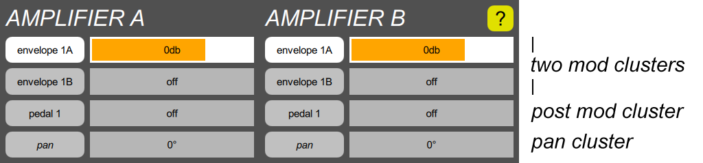

AMPLIFIER section

An amplifier controls the volume of a sound. The volume is controlled by up to two envelope generators which are added together, and then multiplied by a third post modulation such as a pedal or sweep signal. If connected to the output, it also provides a panning control, which can be modulated. In some settings of the patch parameter, the B amplifier controls the mix between the A and B oscillators, and only the A amplifier goes to the output, so the B pan controls are inactive.
Each amplifier has four clusters:
- Two envelope mod clusters, which are mixed together.
- One post mod cluster, which applies after the envelopes.
- One pan cluster